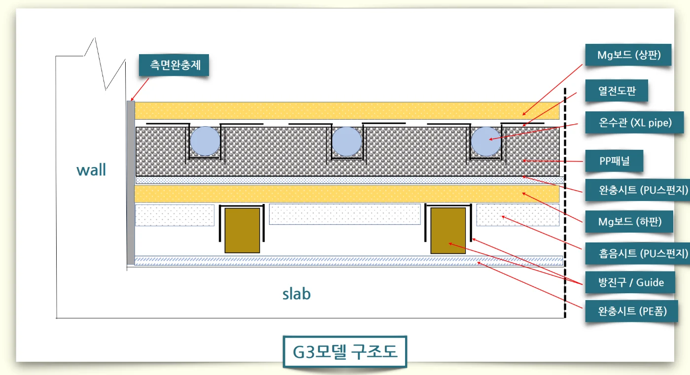
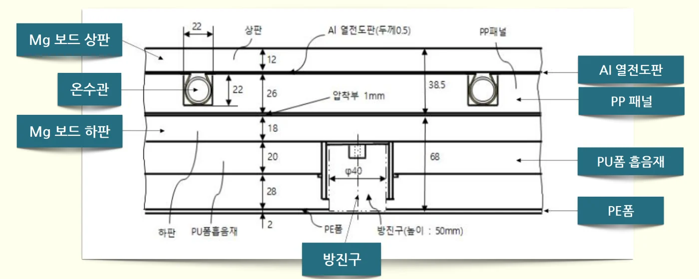
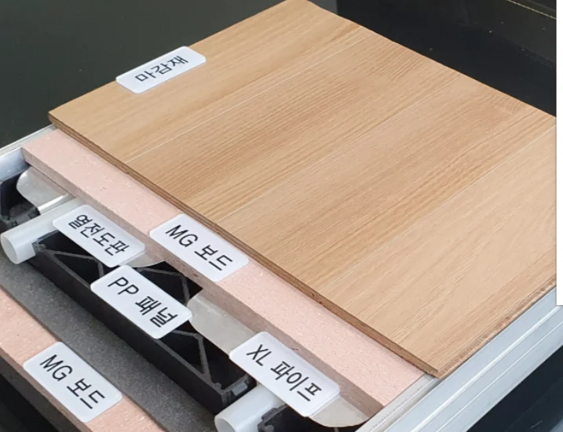
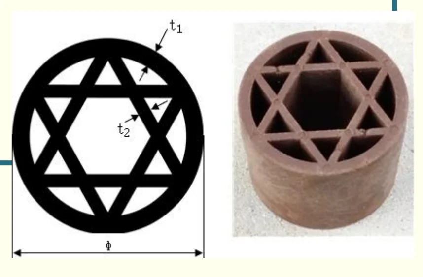
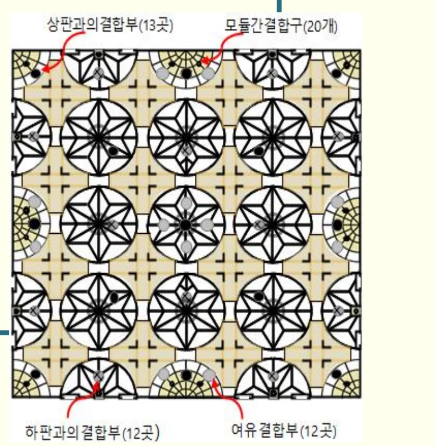

층간소음 건식온돌 전문 · 다담솔루션
건식온돌이란? 습식온돌과 무엇이 다른가요
건식온돌은 슬래브 위에 시멘트나 물을 쓰지 않고, 흡음재·방진구·마그네슘보드·패널 같은 공장 제작 부품을 조립해서 만드는 온돌입니다. 몰탈 타설과 양생이 없어 공사가 빠르고(자체 분석 기준 바닥공사 약 1일, 습식은 20일 이상), 무게가 1㎡당 약 60kg으로 습식(약 140kg)의 절반 이하이며, 다담솔루션 제품은 경량·중량충격음 모두 1등급을 받았습니다.
- 무게 (1㎡당)
- 약 60kg vs 140kg
- 바닥공사 기간
- 약 1일 vs 20일+
- 층간소음 등급
- 경량·중량 1등급
- 난방에너지
- 습식 대비 53% 절감
건식온돌과 습식온돌 비교
| 항목 | 다담 건식온돌 | 일반 습식(반건식)온돌 |
|---|---|---|
| 구성 | 방진구·마그네슘보드·PP패널 등 조립 | 기포콘크리트 + 완충재 + 온수배관 + 몰탈 |
| 무게 (1㎡당) | 약 60kg | 약 140kg |
| 층간소음 | 경량 29dB · 중량 34dB (1등급 인정) | 슬래브 두께와 완충재에 따라 편차 큼 |
| 바닥공사 기간 | 약 1일, 후속공정 즉시 가능 | 몰탈 타설 + 양생 20일 이상 |
| 난방 승온 시간 | 약 1시간 | 약 4시간 |
| 난방에너지 | 습식 대비 53% 절감 (간헐난방 시 최대 약 70%) | 기준 |
| 하자 보수 | 모듈 교체 (비파괴) | 몰탈 철거 후 재시공 |
| 모듈러 주택 적용 | 공장 제작·현장 조립 방식과 호환 | 물·양생이 필요해 공장 제작이 어려움 |
층간소음을 줄이는 원리: 1/12 옥타브 역진동 설계
기존 기술은 온돌 안에 완충재를 넣어 충격을 흡수하는 방식입니다. 그런데 슬래브를 두드렸을 때와 온돌을 두드렸을 때 주파수별 음압이 겹치면, 소음이 줄지 않거나 오히려 커질 수 있습니다. 국제표준은 소음을 1옥타브 간격으로 평가하기 때문에 그 안의 세부 주파수를 알기 어렵습니다.
다담솔루션은 건물 맨바닥의 진동 특성을 1/12 옥타브 간격으로 측정해 층간소음을 일으키는 주파수를 찾고, 온돌 구성요소나 설치 방법을 바꿔 맨바닥과 반대되는 진동 특성을 갖도록 설계합니다. 이 기술은 「건축물 블랭크의 진동특성을 고려한 층간소음 저감용 건식온돌패널 설계 및 제조기술」로 2022년 9월 국가신기술(NET 제1442호)을 받았습니다. 주파수 제어 기술 자세히 보기
2022년 보도에 따르면 이 기술을 적용한 실험에서 체중 77kg 성인이 뛸 때 33dB, 걸을 때 28dB가 측정됐고, 40kg 이하 어린이가 뛸 때는 층간소음이 거의 발생하지 않았습니다.
건식온돌은 어떻게 생겼나요? (구조도)



습식온돌이 시멘트 몰탈로 마감되는 것과 달리, 건식온돌은 공장에서 만든 조립식 난방패널로 구성됩니다. 용도는 기존 주택 리모델링, 신축 공동주택, 모듈러 주택 세 가지입니다.
핵심 부품 3가지
1. 친환경 Mg보드 (마그네슘보드)
휨강도 18.8N/㎟, 겉보기밀도 1.1g/㎤, 열전도율 0.19W/(m·K)(25°C), 라돈 방사능지수 0.0653(기준 1 이하)입니다. 방사능 시험에서 Ra-226 9.0Bq/kg(기준 130 이하), Th-232 4.2Bq/kg, K-40 43Bq/kg이 측정됐습니다.
2. 고강성 방진구 (특허 제10-2119407호)

슬래브와 온돌 사이에서 충격·진동을 끊어 주는 부품입니다. 기본 모델은 압축하중 230N, 높이 50mm이고, 건물에 맞춰 압축하중 200~300N, 높이 40~60mm(형상 5종)로 바꿔 씁니다.
3. PP패널 (육각별형 구조)

온수관을 끼워 넣고 위쪽 하중을 받치는 부품입니다. 최대 압축하중은 강성형 49.4kN, 슬림형 33.8kN입니다. PP패널과 방진구는 2020년 합병한 (주)한다실업에서 직접 금형·사출로 생산합니다.
관련 특허: 제10-1467553호 등 특허 7건, 디자인등록 제30-0959172호·제30-1227980호. 전체 목록과 특허증 이미지는 성능·인증 페이지에 있습니다.
자주 묻는 질문
건식온돌과 습식온돌의 가장 큰 차이는 무엇인가요?
건식온돌은 난방이 잘 되나요?
건식온돌은 바닥이 꺼지거나 울리지 않나요?
1/12 옥타브 역진동 설계란 무엇인가요?
건식온돌은 어떤 부품으로 구성되나요?
근거 자료
- 다담솔루션 제품소개·연혁·지적재산권·시험성적서 (dadamsolution.com)
- 경향신문, 「다담솔루션 “층간소음 해결 신기술 인증 획득”」 (2022.10.05)
- 지이코노미, 「“층간소음 해결이 최고의 민생”…다담솔루션 이금재 대표를 만나다」 (2023.12.17)
- 매일경제, 「다담솔루션, 층간소음요? 쿵쿵대도 끄떡없죠」 (2014.07.13)
- 다담솔루션 「건식온돌 도입에 따른 사업수지 영향 분석」 (2026.04.04, 84㎡ × 1,000세대 · 30층 가정)
- 다담솔루션 신기술(NET) 설명자료 「건축물 Blank 진동특성을 고려한 층간소음 저감용 건식온돌패널 설계 및 제조기술」 (신기술 인증 제1442호 관련)
- 다담솔루션 기업설명자료(IR, 2022.08)